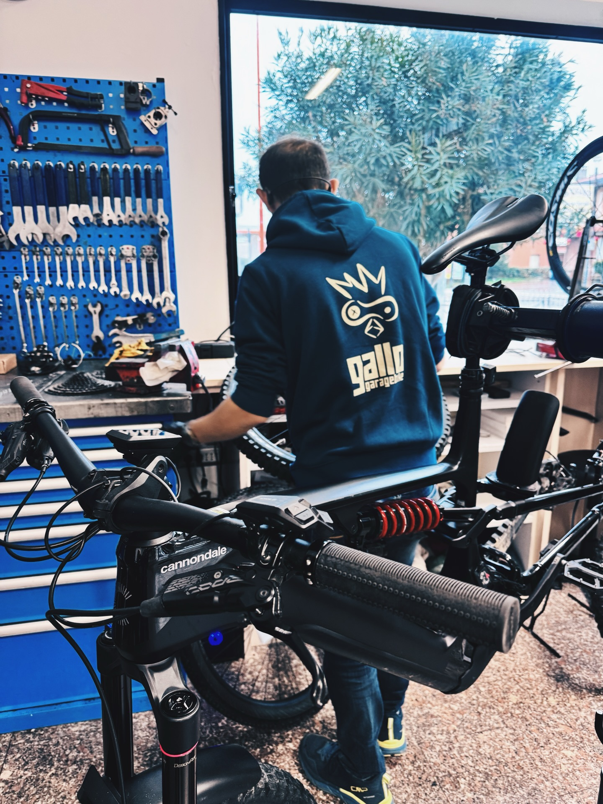
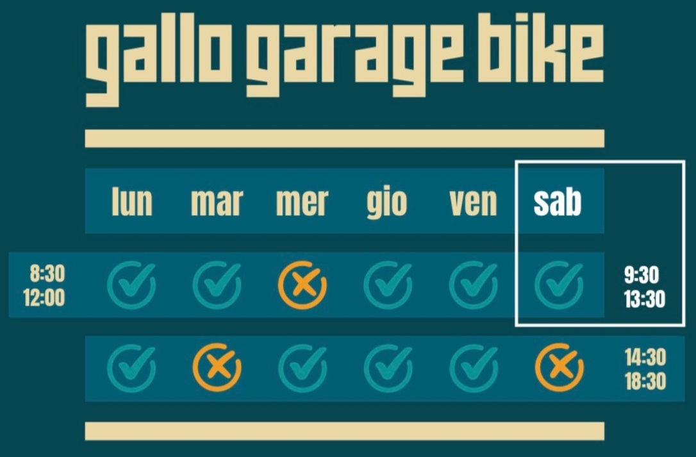

Siamo un'officina indipendente di biciclette a Cesena.
Ci occupiamo di riparazione, manutenzione e messa a punto di CityBike, MTB, bici da corsa ed eBike.
Lavoriamo su appuntamento, partendo sempre da una diagnosi chiara: cosa va sistemato, cosa può aspettare e cosa non conviene fare.
Qui non vendiamo soluzioni standard, ma interventi necessari per rimettere la bici in strada in modo sicuro e affidabile.
